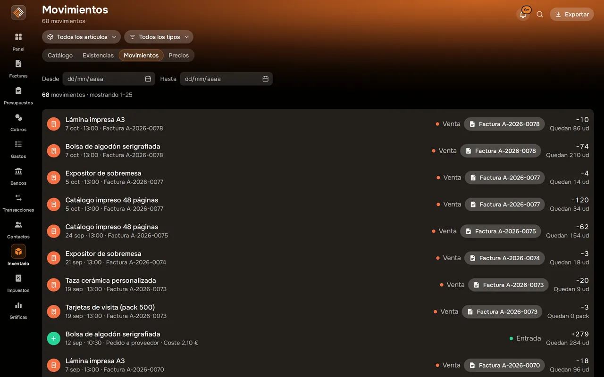
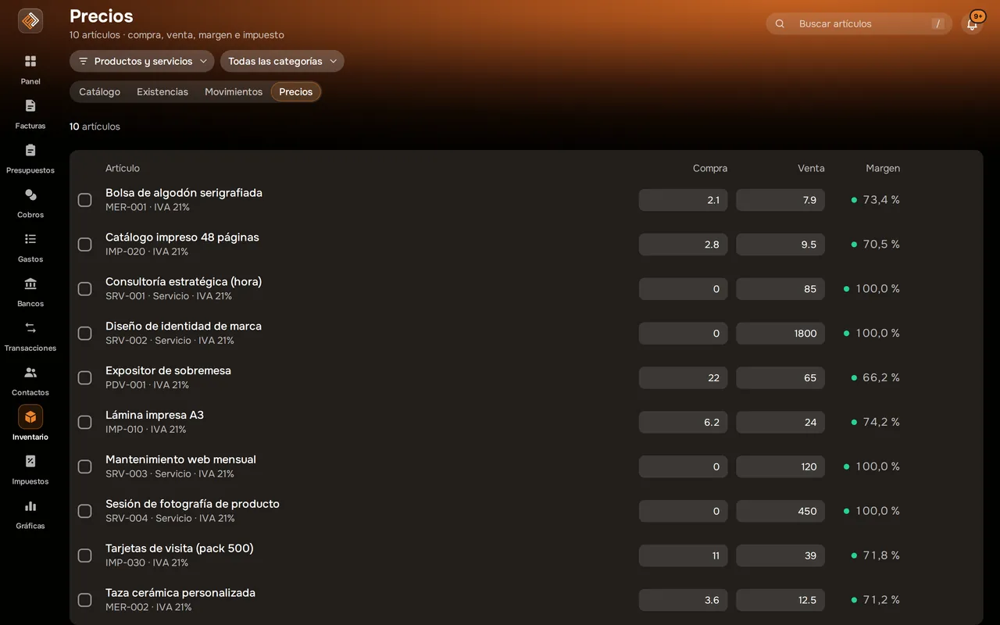

Inventario Nuevo
Tu catálogo y tu stock, siempre al día.
Productos y servicios con sus precios y márgenes, existencias con alertas de stock bajo y un historial de cada movimiento. Lo que facturas se descuenta solo.


Captura real de Facturales con datos de ejemplo.
Así se ve en la app
CatálogoProductos y servicios con su precio, margen y existencias.

MovimientosCada entrada, salida, recuento y venta, con su factura.

PreciosEdita precios en línea o cámbialos en bloque con vista previa.

Qué puedes hacer
Existencias en tiempo real
Activa el control de stock en los productos que lo necesiten y consulta las unidades disponibles de cada uno.
Stock mínimo y alertas
Fija un mínimo por artículo y recibe un aviso cuando baje; el panel te muestra lo que hay que reponer.
Movimientos con historial
Entradas, salidas y ajustes por recuento, con motivo, coste y el stock resultante de cada movimiento.
Descuento al facturar
Al emitir una factura se descuentan las unidades vendidas; si la anulas, vuelven al stock.
Precios y márgenes
Precio de compra y de venta, margen calculado y cambios de precio en bloque con vista previa.
Valor del inventario
Valor de tu stock a coste y a precio de venta, siempre actualizado.
Importación y exportación
Sube tu catálogo en Excel o CSV y descarga existencias y movimientos cuando quieras.
Productos y servicios
Tipo, unidad (ud, h, kg…), categoría, referencia, impuesto y descuento por defecto en cada artículo.
Uso en documentos
Añade artículos a facturas y presupuestos sin teclear precios ni impuestos.
Cómo funciona
Crea o importa
Da de alta tus artículos y activa el control de stock con sus existencias iniciales.
Vende y repón
Las facturas descuentan las unidades vendidas; registra tus entradas de mercancía.
Controla
Revisa existencias, alertas de stock bajo y el valor de tu inventario.
Preguntas frecuentes
¿Facturales controla existencias?
Sí. Activa «Controlar existencias» en cada producto y Facturales lleva sus unidades: entradas, salidas, ajustes por recuento y el descuento automático de lo que vendes al emitir una factura (y su devolución si la anulas). Los servicios no llevan stock.
¿Cómo se descuenta el stock al facturar?
Cuando emites una factura, cada línea cuyo concepto coincide con el nombre de un producto con control de existencias resta sus unidades. Si añades los productos desde el catálogo, el concepto ya coincide.
¿Gestiona varios almacenes?
De momento Facturales lleva un único stock por producto.
¿Cuántos productos puedo tener?
30 en Starter, 150 en Pro e ilimitados en Ilimitado.
Pon orden en tus finanzas esta semana
Crea tu cuenta, emite tu primera factura e importa tu primer extracto. Tienes 14 días de prueba en cualquier plan y puedes cancelar cuando quieras.